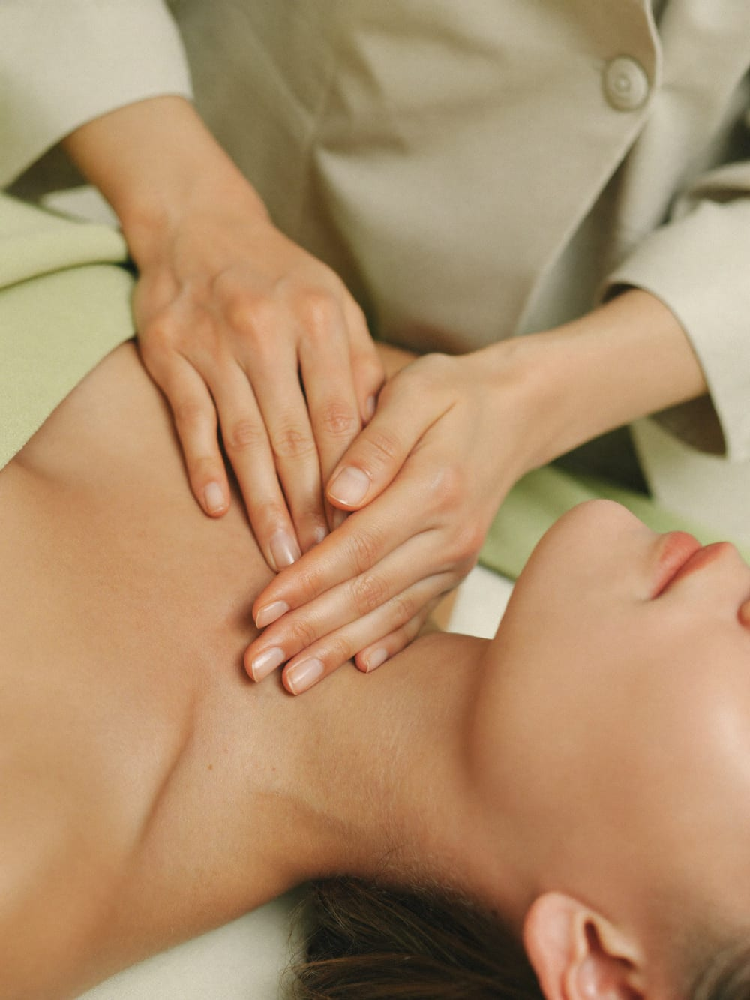
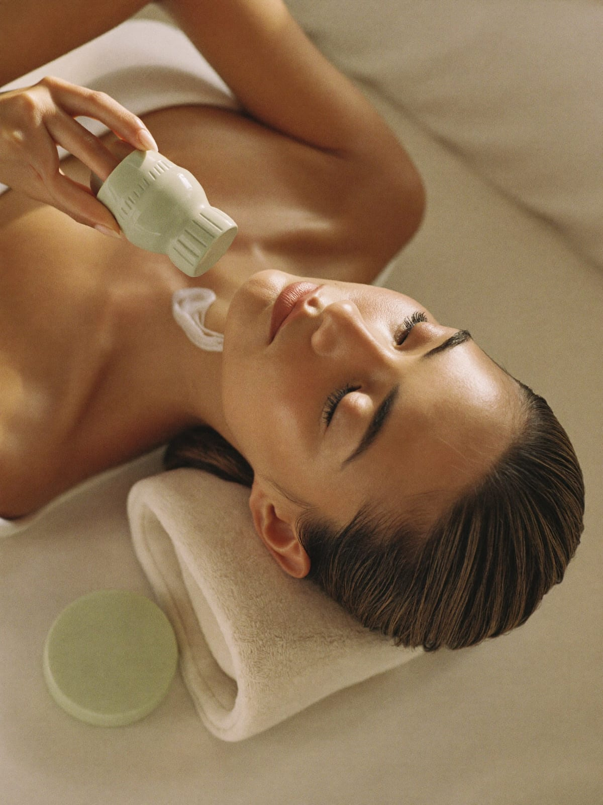
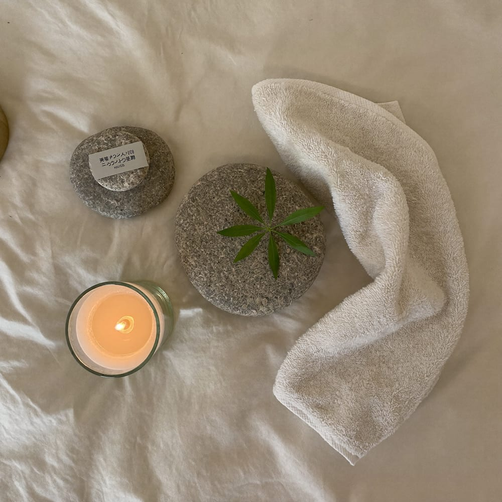
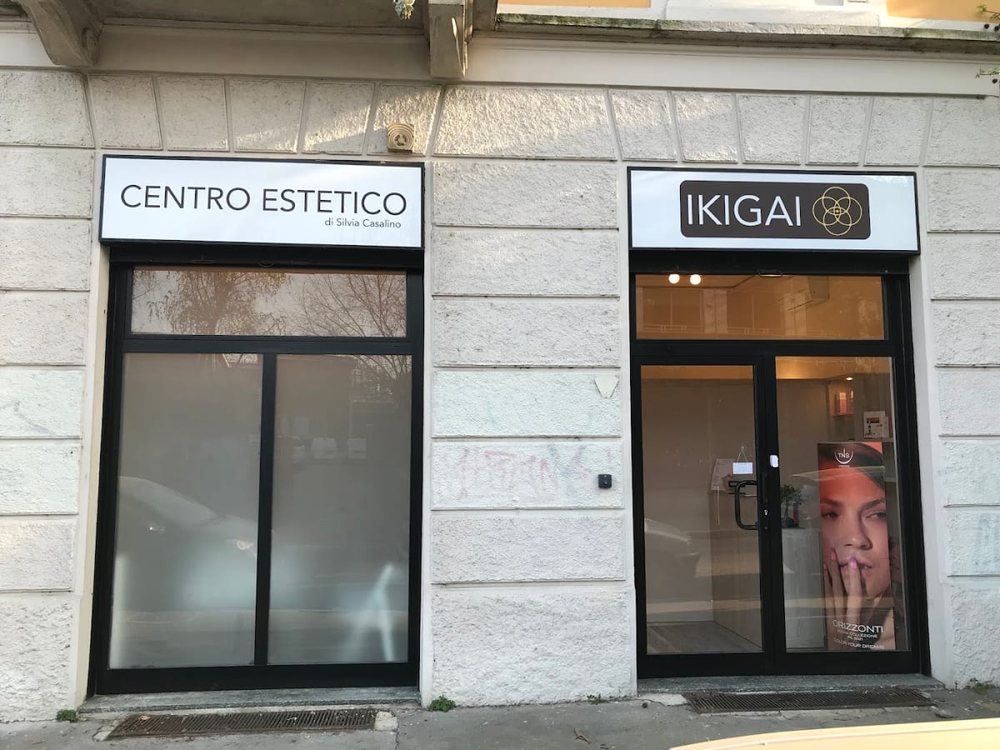

01
Corpo & massaggi
I massaggi di Silvia sono un piccolo rito: sciolgono le tensioni e rimettono in equilibrio. Rilassanti, drenanti, su misura.
Centro estetico & benessere · Lambrate
La tua oasi di serenità.
Un piccolo centro estetico in Via Carlo Bertolazzi, dove Silvia e Avrin si prendono cura di te con mani d'oro. Viso, corpo, massaggi e unghie — con la calma e la cura di una vera coccola.


Il nome
Ikigai è la parola giapponese che indica la ragione per cui vale la pena alzarsi la mattina — ciò che ti fa stare bene. Da noi, quel qualcosa è semplice: prenderti cura di te, con calma.
Niente fretta, niente catena di montaggio. Ogni trattamento è pensato su di te, in un ambiente pulito e accogliente. Come scrivono le clienti: «appena entri, ti senti coccolata».
Cosa offriamo

I massaggi di Silvia sono un piccolo rito: sciolgono le tensioni e rimettono in equilibrio. Rilassanti, drenanti, su misura.
Pulizia del viso, trattamenti mirati e cura della pelle. «La pulizia del viso migliore della mia vita», dicono.
Manicure, pedicure e cura delle unghie, con la stessa attenzione ai dettagli di sempre.
Pacchetti e percorsi pensati per le tue esigenze, da scegliere insieme. Perché ogni pelle è diversa.
Trattamenti indicativi. Il listino completo e i pacchetti si vedono e si prenotano online (Treatwell / Fresha) o al telefono.
Le mani
Ikigai è il centro di Silvia Casalino, seguita con affetto dalle clienti da un salone all'altro, e di Avrin. «Mani d'oro», «mani d'angelo», «gentilezza fuori dal comune»: sono le parole che tornano più spesso nelle recensioni.

Le voci delle clienti
La mia oasi di serenità! Frequento Silvia e Avrin da un anno e il modo speciale che hanno di prendersi cura delle clienti è davvero unico.
Giorgia Filippone · ★★★★★
Ricevere coccole da mani d'oro, che utilizzano prodotti eccellenti, è sempre una gran gioia. Grazie.
Enrica Errico · ★★★★★
Bellissima scoperta nel quartiere Lambrate: questo centro è speciale. Quando posso mi regalo questa coccola unica. Silvia e Avrin, di una gentilezza fuori dal comune.
Cinzia N. · ★★★★★
Ragazze fantastiche, sempre gentili e sorridenti. I massaggi di Silvia sono fantastici. Cura dei dettagli in ogni trattamento.
Stefania Fedele · ★★★★★
Personale competente e gentilissimo. Ho fatto la pulizia del viso migliore della mia vita!
Laura Bi · ★★★★★
Dove siamo
FAQ
In Via Carlo Bertolazzi 10, a Lambrate (Milano).
Martedì 11–20, mercoledì e venerdì 10–19, giovedì 9–18, sabato 9–17:30. Domenica e lunedì chiuso.
Trattamenti viso, corpo e massaggi, unghie e percorsi personalizzati. Su appuntamento.
Online tramite Treatwell o Fresha, oppure chiamando lo 02 0995 2595.